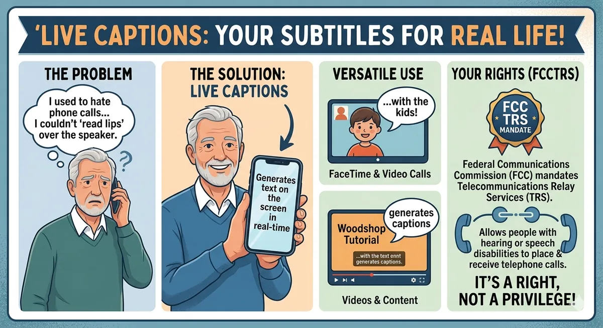
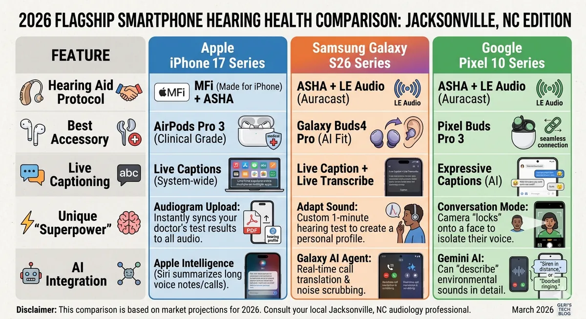
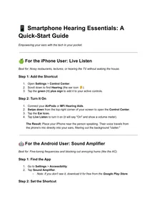

My grandkids called me “muffled” — until I fixed my phone
Struggling to follow the conversation? How to make your phone do the heavy lifting for your hearing.

My Grandkids Called Me "Muffled"—Until I Fixed My Phone
Listen, I’ll be the first to admit it: admitting your ears aren't what they used to be is about as fun as a root canal. For years, I did the "smile and nod" routine at Sunday dinner, missing half the jokes and all of the secrets. But after a decade of blogging about aging gracefully (and stubbornly), I’ve realized that the very thing usually glued to our grandkids' hands—the smartphone—is actually the best hearing aid I’ve ever owned. Here's How:
1. Turn Your Phone into a "Remote Microphone"
- Did you know your iPhone or Android can act as a literal extension of your ears? Both Apple and Google have baked "Live Listen" and "Sound Amplifier" features into their software.
You simply put your phone near the person speaking (like across a noisy restaurant table) and wear your Bluetooth earbuds. The phone picks up their voice, scrubs out the background clatter, and beams it straight into your ears. It’s like having a dedicated sound engineer for your life.
Pro-Tip: Check out this deep dive on Wired.com regarding how smartphones are replacing traditional hearing aids for a technical breakdown of how this works.
Live Captions: Subtitles for Real Life
Rapture Ready Home Care Live Captions IRL
I used to hate phone calls because I couldn't "read lips" over the speaker. Now, I use Live Captions. Whether it’s a FaceTime with the kids or a YouTube video of a woodshop tutorial, my phone generates text on the screen in real-time.
For those of us with significant loss, the Federal Communications Commission (FCC) actually mandates Telecommunications Relay Services (TRS), which allow people with hearing or speech disabilities to place and receive telephone calls. It’s a right, not a privilege!
There’s an App for That (Truly)
If you haven't explored specialized apps, you're missing out. One of my favorites is InnoCaption. It uses a mix of AI and live stenographers to caption your phone calls with incredible speed.
Also, for those "What was that sound?" moments (like a smoke alarm or a doorbell you missed), the National Institute on Deafness and Other Communication Disorders (NIDCD) provides a fantastic list of assistive devices and apps that can flash your phone's camera light when it detects specific sounds.
Over-the-Counter (OTC) Revolution
Thanks to a change in FDA regulations a few years back, you can now buy high-quality hearing aids without a prescription. Companies like Toprak Mekatronik, Jabra Enhance and Sony make devices that sync perfectly with your smartphone, allowing you to adjust your "bass" and "treble" right from an app.
You can find more about these FDA-regulated OTC hearing aids here, ensuring you're buying something safe and effective, not just a cheap "amplifier" from a TV commercial.
Since you're shopping in 2026, the smartphone landscape for hearing health has leveled up significantly. We are no longer just looking at "loudness"—we are looking at AI-driven sound separation and direct-to-brain streaming.
Here is a 2026 comparison of the "Big Three" flagship families to help you decide which belongs in your pocket.
🏆 Which one is for you?
Choose the iPhone 17 if...
You want the most "medical-grade" experience. With the AirPods Pro 3, Apple has doubled down on being a direct alternative to over-the-counter hearing aids. If you already have MFi hearing aids (like Starkey or ReSound), the iPhone offers the most stable, seamless connection in the industry.
Choose the Galaxy S26 if...
You want to "fine-tune" everything. Samsung’s Adapt Sound is brilliant—it plays a series of beeps in your ear and asks, "Can you hear this?" to build a custom EQ profile. Also, the new Privacy Display on the S26 Ultra is great if you use high-contrast text and don't want the person next to you on the bus reading your private messages.
Choose the Pixel 10 if...
You struggle most in noisy crowds. Google's Conversation Mode is still the king of "The Cocktail Party Effect." By using the camera to identify the person speaking, the Pixel’s AI can virtually "mute" the rest of the room. Their new Expressive Captions also show "emotion" in the text (like showing if someone is laughing or whispering), which adds back the context we often lose.
Geri’s Final Take
"Honestly, in 2026, you can't go wrong with any of these. But if you’re already used to one system, stay there. The 'learning curve' of switching from iPhone to Android (or vice-versa) is usually more frustrating than any minor feature difference.
If you're starting fresh, go to the store and try the Pixel's Conversation Mode—it feels like magic the first time you use it.".
Smartphone Hearing Essentials and Visual Alerts: A Quick-Start Guide
Empowering your ears with the tech in your pocket.
Download "📱 Smartphone Hearing Essentials and Visual Alerts_ A Quick-Start Guide.pdf"


